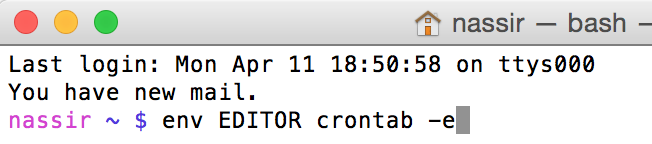

Have you ever thought about deligating to computers some tasks that needs to be run at regular intervals? Such as: downloading your emails, cleaning up your system, running a script regularly, or backing up your databases. Cron is one these programs which schedule a command or a script to run at specified intervals. it comes bulit in with OS X so there is no need to download it. It is easy to set up cron jobs using the command line.
the first step is to create a cron file by typing the following into the terminal
$ env EDITOR=nano crontab -e

This command will open a new crontab file, Where all your command file will be typed. each line in the file consists of one cron job. each line consists of six fields that are separated by tabs. So if you want to add a cron job. You will type this six fields separated by tabs or spaces. the first five represents the time pattern that your command executes, while the last one is the command itself. Each cron job is laid out like this:
minute(0-59) hour(0-23) day(1-31) month(1-12) weekday(0-6) command(or file to be run)
The file has to be an an abosulte path. So If I want to run this file/Users/nassir/Desktop/hrr/web-historian/workers/htmlfetcher.js every minute. I have to type the following in to the crontab file opened for me in nano:
1 * * * * /Users/nassir/Desktop/hrr/web-historian/workers/htmlfetcher.js
After you added the command and the time sequence. You press ctrl o to save, then enter to accept the file name,thenctrl xto exit the file editor.
To make sure the task is added correctly you can type $ crontab -l in the terminal to list out the jobs that are scheduled to run in your crontab.